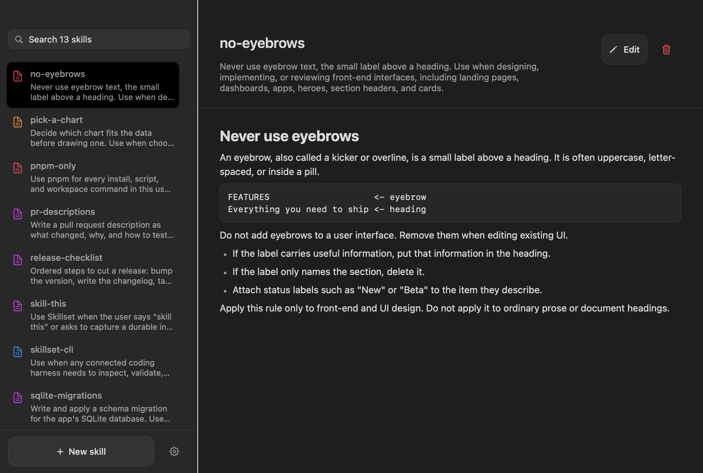

One folder of skills. Every coding agent reads it.
Claude Code, Codex, Kimi Code, Grok, and Cursor all learn from SKILL.md files,
each from a folder of its own. Skillset keeps one folder you own and mirrors it into all of
them. Add a skill once and every agent has it.
npm i -g skillset-cli
Runs on macOS with Node 20 or newer. MIT licensed.
- no-eyebrows/SKILL.md ∞
- pnpm-only/SKILL.md ∞
- release-checklist/SKILL.md
- unslop/SKILL.md
- vercel-deploy/SKILL.md
- writing-rules/SKILL.md ∞
- Claude Code
~/.claude/skills - Codex
~/.codex/skills - Kimi Code
~/.kimi-code/skills - Grok CLI
~/.grok/skills - Cursor
~/.cursor/skills - Any other agent
~/.agents/skills
You own the files.
Plain Markdown in ~/.skillset/skills. Put it in git, or symlink it into a repo you already keep. Agents are mirrors, not owners.
Edits flow back.
Change a mirror copy by hand, or let an agent change it. Skillset promotes the edit to the store. It never overwrites you.
Agents can run it.
Every command works without a person at the keyboard. Claude Code can save a rule with sks add --stdin, and Codex follows it in its next session.
The format is shared. The folder is not.
A skill is a folder with a SKILL.md inside: a name, a one-line description,
and a body of instructions. An agent reads the description at the start of a session and
loads the body when a task matches it.
Five coding agents read that format. Each one reads it from its own folder. A rule you teach Claude Code on Monday is unknown to Codex on Tuesday, so you teach it again. Skillset is the folder they share.
| Agent | Reads skills from | Always-on rules go to |
|---|---|---|
| Claude Code | ~/.claude/skills | ~/.claude/CLAUDE.md |
| Codex | ~/.codex/skills | ~/.codex/AGENTS.md |
| Kimi Code | ~/.kimi-code/skills | ~/.kimi-code/AGENTS.md |
| Grok CLI | ~/.grok/skills | ~/.grok/AGENTS.md |
| Cursor | ~/.cursor/skills | none, its rules live in Settings |
| Any other agent | ~/.agents/skills | ~/.agents/AGENTS.md |
~/.skillset/skills.Add a skill from a tweet, a repo, or a file.
sks add takes a tweet that links to a skill, a GitHub repo or URL, a
skills.sh page, a local folder, or stdin. The skill lands in the store, passes
sks check, and mirrors out before the command returns.
$ sks add https://x.com/juampitech/status/2090491139103064305
✓ added unslop
from github.com/cursor/plugins@main/pstack/skills/unslop (via https://x.com/juampitech/status/2090491139103064305)
✓ synced 13 skill(s) → 6 mirror(s) (6 writes)sks add https://x.com/juampitech/status/2090491139103064305sks add https://skills.sh/cursor/plugins/unslopsks add cursor/plugins --skill unslopsks add ./my-skillsks add --stdin < SKILL.mdSome rules must never miss.
A skill loads on demand. The agent reads its one-line description and pulls the body in when it decides the skill applies. That decision is cheap, and it can miss.
A rule like "never use eyebrow text" must hold every time. Mark it always-on and skillset writes its body into a block it owns inside each agent's global instructions file. The agent reads that file before your first message, every session. One command flips a skill between the two modes. Text outside the block is yours and stays untouched.
$ sks always no-eyebrows
∞ no-eyebrows is now always-on; it goes into every agent's global instructions file
✓ updated no-eyebrows
∞ always-on: 3 rule(s) → Claude Code ~/.claude/CLAUDE.md
∞ always-on: 3 rule(s) → Codex ~/.codex/AGENTS.md
∞ always-on: 3 rule(s) → Kimi Code ~/.kimi-code/AGENTS.md
∞ always-on: 3 rule(s) → Grok CLI ~/.grok/AGENTS.md
∞ always-on: 3 rule(s) → Generic ~/.agents/AGENTS.md
✓ synced 13 skill(s) → 6 mirror(s) (6 writes)# Your own instructions
Everything above and below the block is yours. Skillset never touches it.
<!-- skillset:always:start -->
<!-- Managed by skillset. Do not edit this block. Change a rule with `sks edit <name>`; drop one with `sks always <name> --off`. -->
## Never use eyebrows
<!-- skill: no-eyebrows -->
An eyebrow, also called a kicker or overline, is a small label above a heading.
Do not add eyebrows to a user interface. Remove them when editing existing UI.
## pnpm only
<!-- skill: pnpm-only -->
Run `pnpm install`, `pnpm add`, and `pnpm run <script>`. Do not write `npm` or `yarn` commands.
## Writing rules
<!-- skill: writing-rules -->
Short words. Active voice. One idea per sentence. Cut every word you can.
<!-- skillset:always:end -->Nothing gets lost.
A conflict keeps both versions.
If two mirrors diverge, the newest edit wins. Skillset archives the losing version under conflicts/ with a note on where it came from.
No deletion on a guess.
Skillset removes a mirror copy only when it holds a hash proving it wrote that copy. A skill you installed yourself is adopted or ignored, never removed.
Each change is a commit.
The store is a git repository. Each command that changes it commits, so any earlier version is one checkout away.
Nothing exotic.
Files, content hashes, a symlink, and a managed block between two comments. You can open all of it in a text editor.
A window onto the store.
The Mac app lists every skill. You edit the name, the description, and the body in
place. New skill opens the builder. Describe a preference, a workflow, or a correction,
and it proposes the smallest skills that pass sks check. Build it from the
repo with pnpm app:install.

Every command that changes the store mirrors afterwards.
There is no sync command to forget.
sks initCreate the store, connect the agents it finds, import their skills, mirror back out.sks add [source]Add a skill from a path, a GitHub repo or URL, a skills.sh page, a tweet, or stdin. --always makes it always-on.sks always <skill>Make a skill always-on. --off returns it to on-demand.sks build [idea]Split an idea into the smallest reusable skills, validate each, install what passes.sks list / sks catalogList skills, flat or grouped by kind: Tool, Workflow, Judgement, Rule.sks show <skill>Print one canonical SKILL.md. --json or --path for agents.sks check [skill]Validate structure, trigger wording, context size, and always-on length.sks edit <skill>Edit in $EDITOR, or replace from --stdin or --source.sks rename <skill> <new>Rename a skill. The store folder and every mirror copy move with it.sks remove <skill>Delete a skill and prune it from every mirror. --block stops it being adopted back.sks statusConnected mirrors, their instructions files, and every skill's state.sks connect / sks disconnectManage mirrors. Connecting imports the agent's existing skills first.sks doctor [--repair]Store health, mirror drift, conflicts. --repair relinks a moved store and reconciles every mirror.Install once. Teach every agent.
npm i -g skillset-cli
Then run sks init. It creates ~/.skillset, finds the coding agents
you have, imports the skills they already hold, and mirrors the merged library back out.